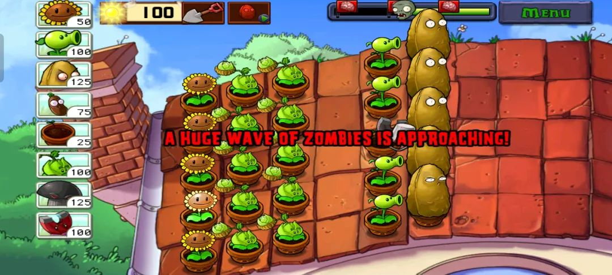
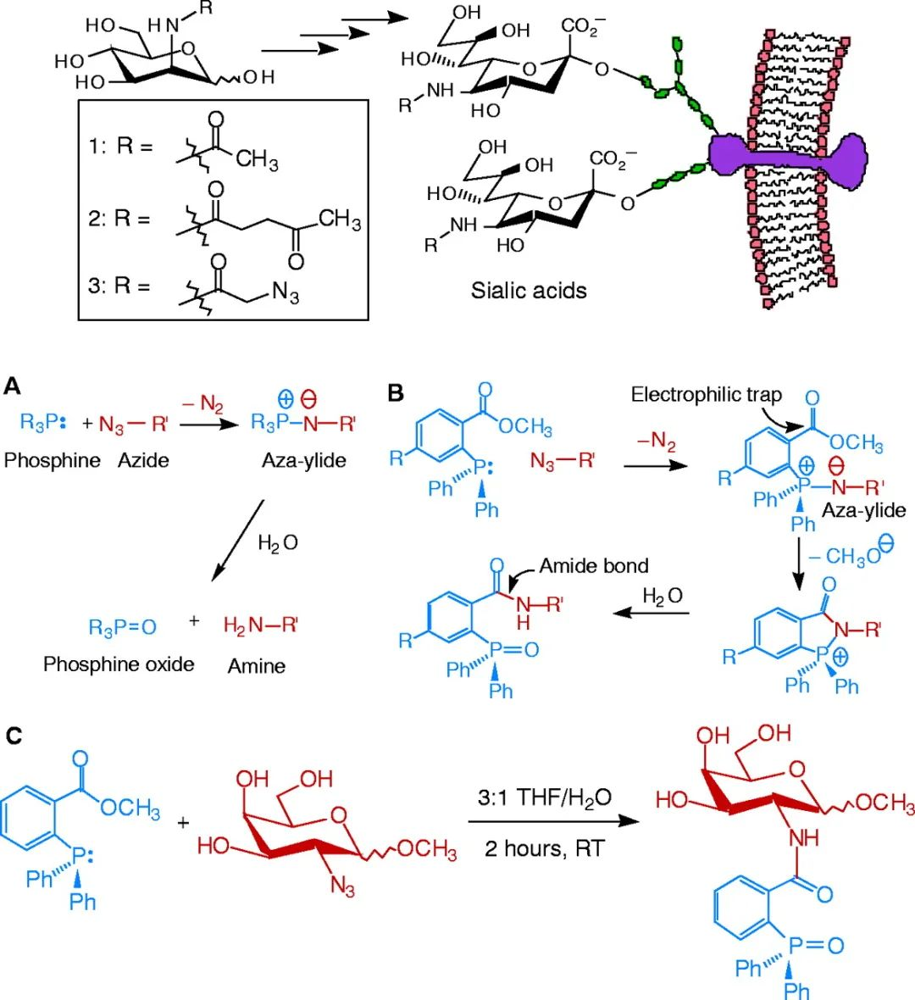
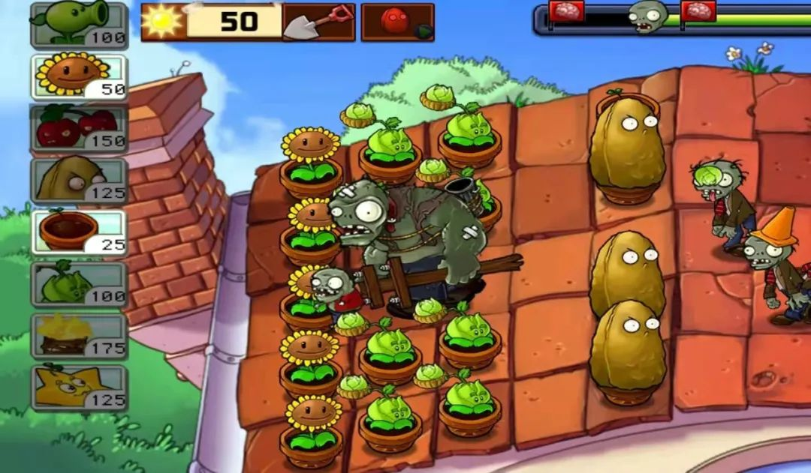
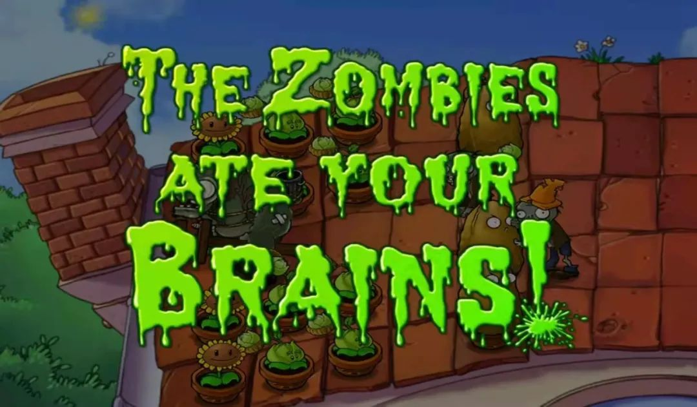

本文是张衔瑜第224篇推文
共计1845个字，4张图
血脑屏障的英文名词很有趣Blood Brain Barrier BBB，当焦虑把这屏障当成当阳长坂坡时，就没有什么能阻挡Ta的了。

私以为，现在的生活就像是那种无聊的跑图游戏。只是理论概念可以建立在现在时域频域上，而不必仅限于地域。
每当要处理什么事情，就得等一段时间。
比如想骑马出去玩。
东市买骏马，但是钱不够直接买成熟体，于是只能买小马驹。等小马驹长大，长成骏马，想骑走的时候，发现会直接振烂胯。
于是去西市买鞍鞯。鞍鞯店的老板说，哎呀我们这个东西，要预定的呢。你要的那一款前些日子还有，现在的话就等物流吧。又过了几天，孔雀快递到了。
以为这下可以去玩了吧，可是最近城里兴起了一股风潮，大家都要再搞点加持来玩。比如要有辔头，这样拍照的时候好看；比如还得有马鞭，这样小视频里能有声音的元素。本来也是对这一套没什么感觉的，但是朋友发了几个小红薯链接，觉得也还不错，就也打算整一套。
托熟人在饥饿营销的攻势下南市买辔头、北市买长鞭。因为马儿在路边随便靠着，随地大小便，还出了点城市清洁费，这是后话。绕了绕，没觉得哪里多好，也没觉得哪里不对。反正有也行、没有也行，那就这样呗。出城！
出门的时候看天气，春和景明、波澜不惊，是个好天气。走到城门下，觉得已经准备完全了，刚打的芒果冰沙等下要在樱花树下喝。
人还没出城，俶尔飞来禁令，城内出现新冠肺炎确诊病例，非必要不离开、离开必须得持24小时内核酸证明。
骑马到医院，没想到还有驾驶仙鹤过来的。看了看前面排队的人，既没有保持社交距离，而且排完之后估计手里的芒果冰沙都化了。还不如回吧，去天台算了。反正也是些苟事情，总整些东西给自己找不快乐干嘛，梦里一样可以关山度若飞。
You see, 这差不多就是最近的生活状态。一个事情嵌套着另一个事情，就像跑图游戏。在这里反正也完不成，你约了一个时间开会，那个会在下一周。下周开会说我们可以推迟几个小时吗，重复定了会议在这个时间。终于开会了，开会的结果是我们解决不了这个问题，得去问另一个人。好吧，那就去另一个人那里，带着在上一处的结果。另一个人的邮箱自动回复：正在休假，不日将回。
有一个名词，叫生物正交反应。生物正交反应是指能够在生物体系中进行、且不会与天然生物化学过程相互干扰的一类化学反应。专业地说，施陶丁格偶联反应就很典型：用一般位于三芳膦上的亲电基团（如甲酯）捕获氮杂叶立德（亚胺基膦烷）中间体，在水介质中进行作用，重排后得到分子内酰胺基氧化膦。画个机理图就很好理解了：

Saxon, Eliana, and Carolyn R. Bertozzi." Cell surface engineering by a modified Staudinger reaction." Science 287.5460 (2000): 2007-2010.
还挺好玩的。虽然在一个机理里边并看不出来哪里就正交了，但是如果你有overview of整个化学生物学反应的概念类似细胞微环境中有哪些物质、什么反应快什么反应慢、什么温和什么aggressive，反正我不知道。除非跟我说，或者看报道，才能大致确认一下。直接让我讲，我也还是只知道谷胱甘肽之类的小东西。
为什么突然提到生物正交反应呢？因为觉得很有人们的生活轨迹的特质。事件各自具有独立性，半数的事件click一下然后就飞速地发生完。剩下的时间都在等待，或者准备一些完全没有用的事情。
我打过蛮多比方。希望比方以后不要打回来，毕竟牛顿已经帮你打回来了，除非我们都不宏观、不低速。
我要到山顶去。我知道比较正确的路是先找到山门、然后选择合适的道路，配合一些登山工具，然后向着山顶进发。中间可能涉及到清除小动物、消除疲乏、寻找水源，哒哒哒哒。
现在有人在山顶射了一支箭。尽管有可能不是在山顶开工，总之我看到的就是山顶发出了一支箭，然后千军万马来相见。
有人从山顶投书一封下来。说山顶是可以到的。我看到了。但是现在别说上山的路了，连山门都寻不到在哪。储备的一点关于后来的知识也没有什么用。
很明显能感觉到，反正也只是想用最擅长之处或者最贴合之处做些什么成绩出来。至于有关终极目标或者是终身发展之类的教育理念呢？不能说完全没有，只能说和我在早餐的米粉里加剁辣椒一样没什么味蕾感觉。
前两天读文献的时候，读着读着不知道怎么地就难受了起来。不是那种因为文献太艰深晦涩的难受，也不是因为这个知识点理解起来费劲到让人感到信心丧失的难受，也不是其他种种，而是一种：我明显地感觉到作者在把论文处理到这个样子的时候，Ta (们) 所要经历多少痛苦的那种难受。
我不知道这种感觉是怎么得到的，就是这种难受的感觉很真实、但是物理文本又只是那一些。我仅仅作为一个都不是这篇文章的作者，或者听过他们的介绍，就在这里共情、或者说脑补出了一场有关做实验、写论文的艰苦卓绝。
Word文档这一页到底咯，下次再来散播焦虑情绪。

